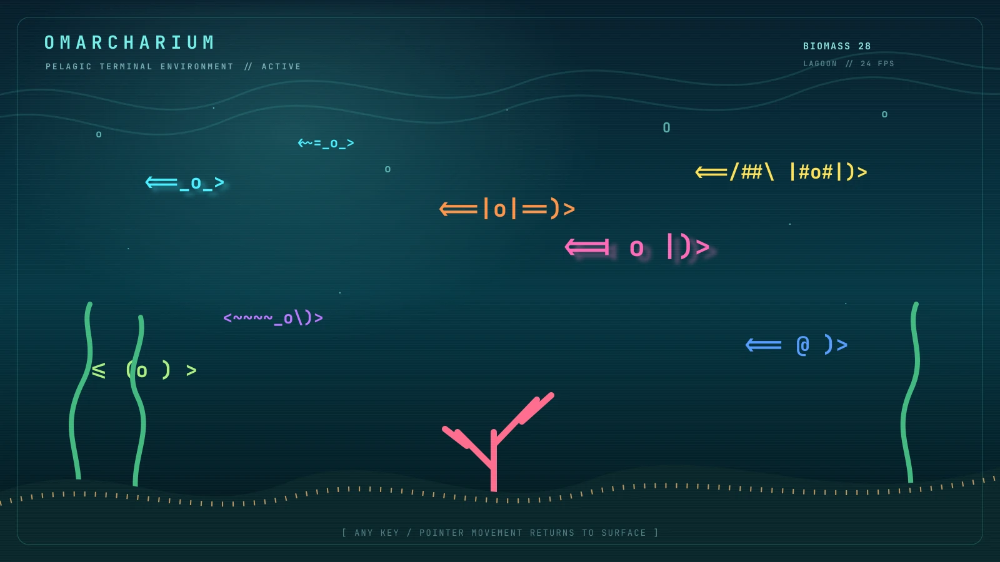
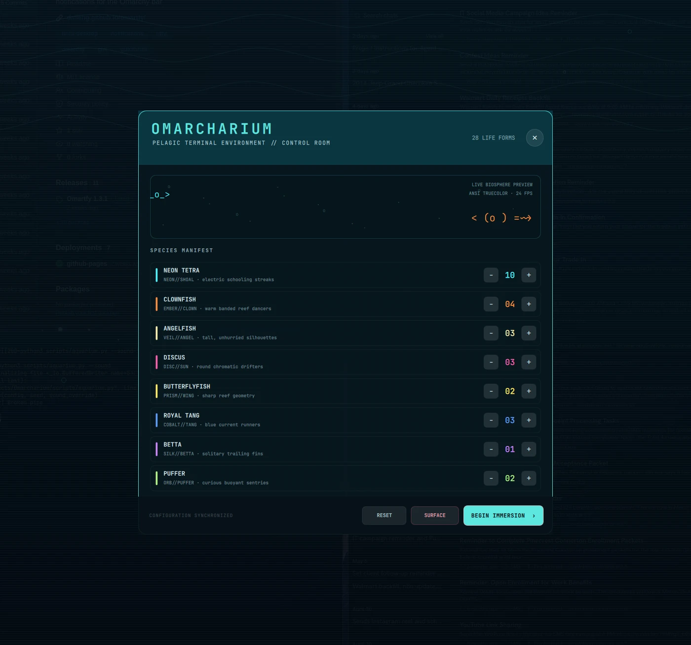
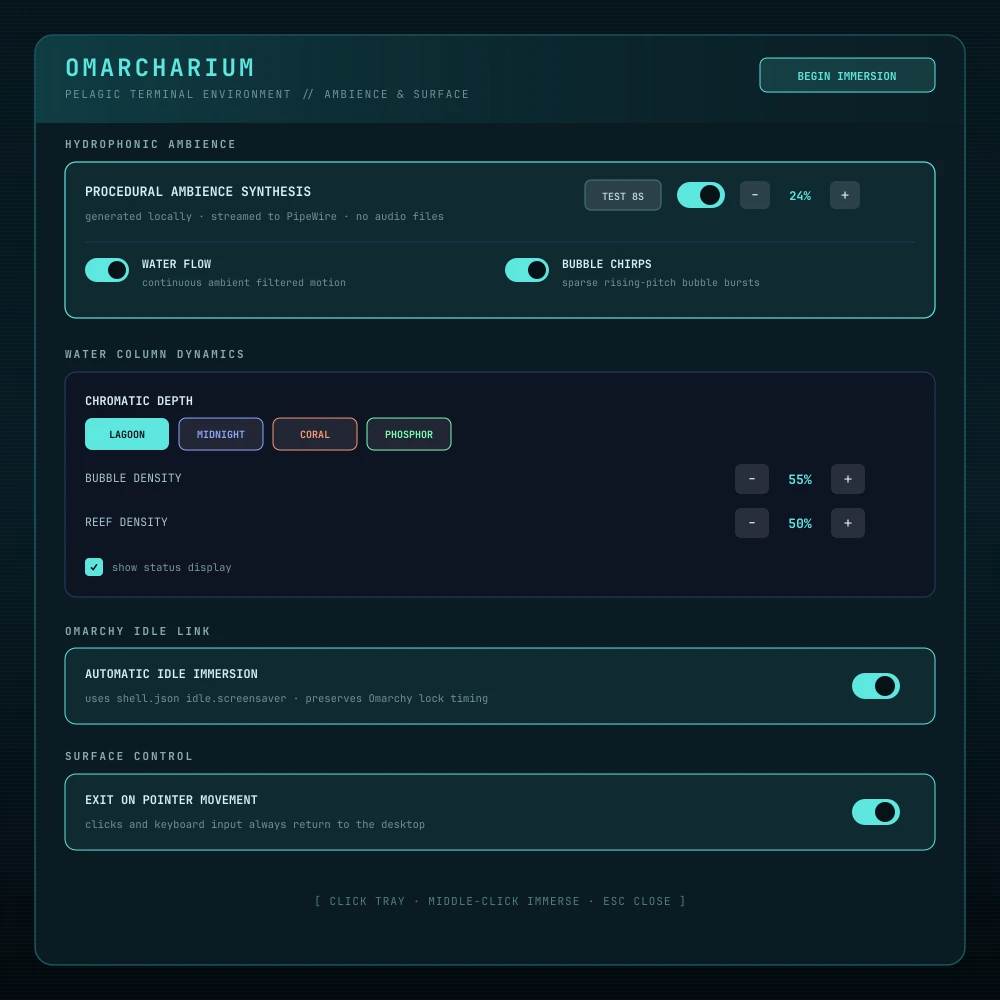

Distinct life
Neon tetras school. Bettas trail silk-like fins. Puffers drift. Angels rise through the water column. Every species has its own visual and motion grammar.
PELAGIC TERMINAL ENVIRONMENT // OMARCHY QUATTRO
Eight tropical species. A procedural habitat. Optional synthesized ambience. One meticulously integrated screensaver for every monitor.

01 // THE EXPERIENCE
Omarcharium treats character cells as a living medium: motion, color, depth, and restraint instead of a looping video or static effect.
Neon tetras school. Bettas trail silk-like fins. Puffers drift. Angels rise through the water column. Every species has its own visual and motion grammar.
Plain depth, pelagic fields, and local raster images sit beneath independently animated current and depth effects.
Lagoon, Midnight, Coral, and Phosphor palettes recolor the complete habitat without flattening species identity.
Filtered water motion and bubble chirps stream directly to PipeWire. One monitor leads; the others remain silent.
02 // CONTROL ROOM
Click the tray icon to tune exact populations, backdrops, ambience, and surface controls; right-click for concise actions and bug reporting. Changes persist atomically and apply to the next immersion.


03 // NATIVE BY DESIGN
A service and overlay share the existing shell process. Rendering exists only during immersion.
04 // INSTALL
Requires current Omarchy Quattro and Python 3.11+. No pip, npm, compiler, installer hook, or privileged write.
omarchy plugin add https://github.com/DailenG/omarcharium --enable